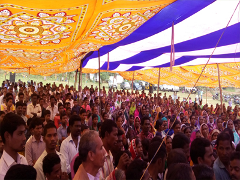

L4LM started in Delhi in the year of 2003 with the guidance of Holy Spirit. And waited for the will of GOD by fasting and prayer and 11th February 2007 a manual inauguration was held at Narela for L4LM.
L4LM stands for “Light For Life Mission”. According to the Bible John .8:12; “Then spake jesus again unto them, saying, i am the light of the world: he that followeth me shall not walk in darkness, but shall have the light of life”.
Our ministry steps for many community based activities along with spreading Gospel, to show the way of eternal life.This is a registered organization under societies registration act XXI 1860; registered name is “Light For Life Charitable Society” Regd: S/61104/2008
L4LM is a non –profit organization based in Delhi, Works in Northern states of the nation. Our mission is to transform lives and communities throughout the nation with showing the love of our Lord and Saviour Jesus Christ. We focus to bring a new hope and practical faith through the word of God. And prepare under- privileged children, youth, and destitute women, to have a new hope and dream for their bright future.
We give more priority to community to make adequate arrangements and start/run rehabilitation centers for under privileged children, old men & women, poor widows, destitute, socially backward people for their social/civic enlistment, as per Govt. Rules with love and compassion through showing the way of eternal life without religion, cast and discriminations.
